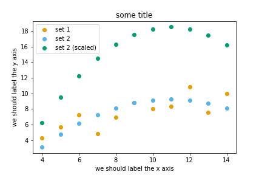
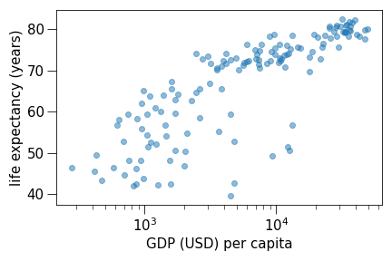

One thing I have learned over the years is that automation is your friend. I
think figures should be autogenerated as part of the data analysis pipeline
(which should also be automated), and they should come out of the pipeline
ready to be sent to the printer, no manual post-processing needed.
No manual post-processing. This will bite you when you need to regenerate 50
figures one day before submission deadline or regenerate a set of figures
after the person who created them left the group.
There is not the one perfect language and not the one perfect library for everything.
Within Python, many libraries exist:
Matplotlib:
probably the most standard and most widely used
Seaborn:
high-level interface to Matplotlib, statistical functions built in
Altair:
declarative visualization (R users will be more at home), statistics built in
Matplotlib is perhaps the most “standard” Python plotting library.
Many libraries build on top of Matplotlib.
MATLAB users will feel familiar.
Even if you choose to use another library (see above list), chances are high
that you need to adapt a Matplotlib plot of somebody else.
Libraries that are built on top of Matplotlib may need knowledge of Matplotlib
for custom adjustments.
However it is a relatively low-level interface for
drawing (in terms of abstractions, not in terms of quality) and does not
provide statistical functions. Some figures require typing and tweaking many lines of code.
Many other visualization libraries exist with their own strengths, it is also a
matter of personal preferences. Later we will also try other libraries.
We can start in a Jupyter notebook since notebooks are typically a good fit
for data visualizations. But if you prefer to run this as a script, this is
also OK.
Let us create our first plot using
subplots(),
scatter, and some other methods on the
Axes object:
# this line tells Jupyter to display matplotlib figures in the notebook%matplotlibinlineimportmatplotlib.pyplotasplt# this is dataset 1 from# https://en.wikipedia.org/wiki/Anscombe%27s_quartetdata_x=[10.0,8.0,13.0,9.0,11.0,14.0,6.0,4.0,12.0,7.0,5.0]data_y=[8.04,6.95,7.58,8.81,8.33,9.96,7.24,4.26,10.84,4.82,5.68]fig,ax=plt.subplots()ax.scatter(x=data_x,y=data_y,c="#E69F00")ax.set_xlabel("we should label the x axis")ax.set_ylabel("we should label the y axis")ax.set_title("some title")# uncomment the next line if you would like to save the figure to disk# fig.savefig("my-first-plot.png")
Exercise Matplotlib-1: extend the previous example (15 min)
Extend the previous plot by also plotting this set of values but this time
using a different color (#56B4E9):
# this is dataset 2data2_y=[9.14,8.14,8.74,8.77,9.26,8.10,6.13,3.10,9.13,7.26,4.74]
Then add another color (#009E73) which plots the second dataset, scaled
by 2.0.
# here we multiply all elements of data2_y by 2.0data2_y_scaled=[y*2.0foryindata2_y]
Try to add a legend to the plot with matplotlib.axes.Axes.legend() and searching the web for clues on
how to add labels to each dataset.
At the end it should look like this one:

Solution
# this line tells Jupyter to display matplotlib figures in the notebook%matplotlibinlineimportmatplotlib.pyplotasplt# this is dataset 1 from# https://en.wikipedia.org/wiki/Anscombe%27s_quartetdata_x=[10.0,8.0,13.0,9.0,11.0,14.0,6.0,4.0,12.0,7.0,5.0]data_y=[8.04,6.95,7.58,8.81,8.33,9.96,7.24,4.26,10.84,4.82,5.68]# this is dataset 2data2_y=[9.14,8.14,8.74,8.77,9.26,8.10,6.13,3.10,9.13,7.26,4.74]# here we multiply all elements of data2_y by 2.0data2_y_scaled=[y*2.0foryindata2_y]fig,ax=plt.subplots()ax.scatter(x=data_x,y=data_y,c="#E69F00",label='set 1')ax.scatter(x=data_x,y=data2_y,c="#56B4E9",label='set 2')ax.scatter(x=data_x,y=data2_y_scaled,c="#009E73",label='set 2 (scaled)')ax.set_xlabel("we should label the x axis")ax.set_ylabel("we should label the y axis")ax.set_title("some title")ax.legend()# uncomment the next line if you would like to save the figure to disk# fig.savefig("exercise-plot.png")
When plotting with Matplotlib, it is useful to know and understand that
there are two approaches even though the reasons of this dual approach is
outside the scope of this lesson.
The more modern option is an object-oriented interface (the
fig and ax objects
can be configured separately and passed around to functions):
importmatplotlib.pyplotasplt# this is dataset 1 from# https://en.wikipedia.org/wiki/Anscombe%27s_quartetdata_x=[10.0,8.0,13.0,9.0,11.0,14.0,6.0,4.0,12.0,7.0,5.0]data_y=[8.04,6.95,7.58,8.81,8.33,9.96,7.24,4.26,10.84,4.82,5.68]fig,ax=plt.subplots()ax.scatter(x=data_x,y=data_y,c="#E69F00")ax.set_xlabel("we should label the x axis")ax.set_ylabel("we should label the y axis")ax.set_title("some title")
The more traditional option mimics MATLAB plotting and uses the
pyplot interface (:py:mod:plt<matplotlib.pyplot> carries
the global settings):
importmatplotlib.pyplotasplt# this is dataset 1 from# https://en.wikipedia.org/wiki/Anscombe%27s_quartetdata_x=[10.0,8.0,13.0,9.0,11.0,14.0,6.0,4.0,12.0,7.0,5.0]data_y=[8.04,6.95,7.58,8.81,8.33,9.96,7.24,4.26,10.84,4.82,5.68]plt.scatter(x=data_x,y=data_y,c="#E69F00")plt.xlabel("we should label the x axis")plt.ylabel("we should label the y axis")plt.title("some title")
When searching for help on the internet, you will find both approaches, they
can also be mixed. Although the pyplot interface looks more compact, we
recommend to learn and use the object oriented interface.
Why do we emphasize this?
One day you may want to write functions which wrap
around Matplotlib function calls and then you can send Figure and Axes
into these functions and there is less risk that adjusting figures changes
settings also for unrelated figures created in other functions.
When using the pyplot interface, settings are modified for the entire
matplotlib.pyplot package. The latter is acceptable for linear scripts but may yield
surprising results when introducing functions to enhance/abstract Matplotlib
calls.
Do not customize “manually” using a graphical program (not easily repeatable/reproducible).
No manual post-processing. This will bite you when you need to regenerate 50
figures one day before submission deadline or regenerate a set of figures
after the person who created them left the group.
Matplotlib and also all the other libraries allow to customize almost every aspect of a plot.
Here are 3 exercises where we try to adapt existing scripts to either tweak
how the plot looks (exercises 1 and 2) or to modify the input data (example 3).
This is very close to real life: there are so many options and possibilities and it is
almost impossible to remember everything so this strategy is useful to practice:
select an example that is close to what you have in mind
being able to adapt it to your needs
being able to search for help
being able to understand help request answers (not easy)
Exercise Customization-1: log scale in Matplotlib (15 min)
In this exercise we will learn how to use log scales.
To demonstrate this we first fetch some data to plot:
Exercise Customization-2: preparing a plot for publication (15 min)
Often we need to create figures for presentation slides and for publications
but both have different requirements: for presentation slides you have the whole
screen but for a figure in a publication you may only have few centimeters/inches.
For figures that go to print it is good practice to look at them at the size
they will be printed in and then often fonts and tickmarks are too small.
Your task is to make the tickmarks and the axis label font larger, using
Matplotlib parts of a figure
and web search, and to arrive at this:

Solution
fig,ax=plt.subplots()ax.scatter(x=data_2007["gdpPercap"],y=data_2007["lifeExp"],alpha=0.5)ax.set_xscale("log")ax.set_xlabel("GDP (USD) per capita",fontsize=15)ax.set_ylabel("life expectancy (years)",fontsize=15)ax.tick_params(which="major",length=10)ax.tick_params(which="minor",length=5)ax.tick_params(labelsize=15)
Exercise Customization-3: adapting a gallery example
This is a great exercise which is very close to real life.
Your task is to select one visualization library (some need to be installed first - in
doubt choose Matplotlib or Seaborn since they are part of Anaconda installation):
Matplotlib:
probably the most standard and most widely used
Seaborn:
high-level interface to Matplotlib, statistical functions built in
Altair:
declarative visualization (R users will be more at home), statistics built in
K3D:
Jupyter notebook extension for 3D visualization
Browse the various example galleries (links above).
Select one example that is close to your recent visualization project or simply interests you.
First try to reproduce this example in the Jupyter notebook.
Then try to print out the data that is used in this example just before the call of the plotting function
to learn about its structure. Is it a pandas dataframe? Is it a NumPy array? Is it a dictionary? A list?
a list of lists?
Then try to modify the data a bit.
If you have time, try to feed it different, simplified data.
This will be key for adapting the examples to your projects.
The d seems to be the data. Right before the call to sns.violinplot, add a print(d):
importnumpyasnpimportseabornassnssns.set_theme()# Create a random dataset across several variablesrs=np.random.default_rng(0)n,p=40,8d=rs.normal(0,2,(n,p))d+=np.log(np.arange(1,p+1))*-5+10print(d)# Show each distribution with both violins and pointssns.violinplot(data=d,palette="light:g",inner="points",orient="h")
The print reveals that d is a NumPy array and looks like a two-dimensional list:
Now let’s try with a much simplified two-dimensional list:
# import numpy as npimportseabornassnssns.set_theme()# # Create a random dataset across several variables# rs = np.random.default_rng(0)# n, p = 40, 8# d = rs.normal(0, 2, (n, p))# d += np.log(np.arange(1, p + 1)) * -5 + 10d=[[1.0,2.0,2.0,3.0,3.0,3.0],[1.0,1.0,1.0,2.0,2.0,3.0]]# Show each distribution with both violins and pointssns.violinplot(data=d,palette="light:g",inner="points",orient="h")
Seems to work! And finally we arrive at a working example with our own data with all
the “clutter” removed:
importseabornassns# l1 and l2 are note great names but they will do for a quick testl1=[1.0,2.0,2.0,3.0,3.0,3.0]l2=[1.0,1.0,1.0,2.0,2.0,3.0]sns.violinplot(data=[l1,l2],palette="light:g",inner="points",orient="h")
And now we can focus the rest of our work to read our real data.
Finally we can customize the plot, e.g. web search for “seaborn violin plot axis labels”
and add ax.set_yticklabels(['dataset1','dataset2']).
Discussion
After the exercises, the group can discuss their findings and it is important to
clarify questions at this point before moving on.
Keypoints
Avoid manual post-processing, script everything.
Browse a number of example galleries to help you choose the library
that fits best your work/style.
Figures for presentation slides and figures for manuscripts have
different requirements.
Think about color-vision deficiencies when choosing colors. Use
existing solutions for this problem.